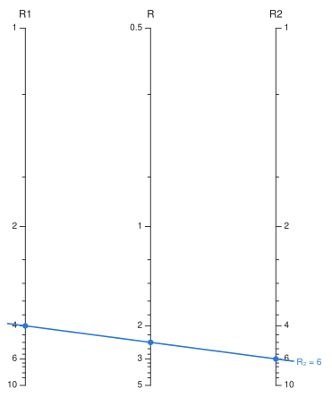
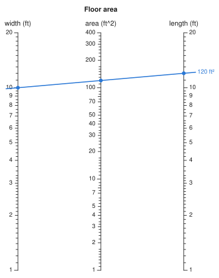

Solving#
You can read a chart numerically as well as by eye. evaluate does what you would do with a straightedge: it finds the line through the known points, and where that line crosses the unknown scale.
using Nomograms
nom = additive_nomogram(
Variable(:R1, ReciprocalScale(); domain = (1, 10)),
Variable(:R2, ReciprocalScale(); domain = (1, 10)),
Variable(:R, ReciprocalScale()),
)
evaluate(nom; R1 = 4, R2 = 6)(R1 = 4.0, R2 = 6.0, R = 2.4)Any variable can be the unknown, so you solve the inverse problem the same way:
evaluate(nom; R1 = 4, R = 2.4)(R1 = 4.0, R2 = 5.999999999999999, R = 2.4)isopleth takes the same arguments and returns the line itself, ready to draw. To draw a reading, pass it a solution from evaluate:
drawing(nom; isopleths = [isopleth(nom, evaluate(nom; R1 = 4, R = 2.4); label = "R₂ = 6")])
More than one crossing#
A straight line can meet a curved scale more than once, and each crossing is a valid solution of the relation. The usual shortcut is to check the sign of the residual at the two ends of the domain and bisect. That fails in two ways. With an even number of crossings, both ends lie on the same side of the line, so it reports no solution. With an odd number greater than one, it returns one of them arbitrarily and does not tell you there are others.
Instead, solve_all_on searches the whole domain. evaluate still returns a single answer. When there are several, it throws an error that lists them instead of picking one. evaluate_all returns every solution:
quad = determinant_nomogram(
Variable(:p; domain = (-6, 0)) => p -> (0.0, p),
Variable(:q; domain = (0, 6)) => q -> (1.0, q),
Variable(:z; domain = (0.2, 5)) => z -> (1 / (1 + z), -z^2 / (1 + z));
relation = (p, q, z) -> z^2 + p * z + q,
)
try
evaluate(quad; p = -3, q = 2)
catch err
println(sprint(showerror, err))
endArgumentError: the alignment line crosses :z at 2 values (1, 2), so there is no single answer to return. Use `evaluate_all` / `solve_all_on` to get them all, or narrow the scale's domain to the branch you want. `isopleth` with the same values draws the line with every crossing marked.[sol.z for sol in evaluate_all(quad; p = -3, q = 2)]2-element Vector{Float64}:
1.0000000000000007
1.9999999999999998On a straight scale the residual is an affine function of position, and so monotone, which means there is at most one root. Charts made only of straight scales never meet this case. Searching the whole domain costs around 120 µs per evaluate call, against a few microseconds for bracketing, which makes no practical difference when reading charts.
Checking a chart#
max_relation_residual solves the chart over a grid of inputs and compares every answer with the chart's relation. For a chart built by auto_nomogram, the relation is the function you passed in. For other charts, it is the separable form the chart was built from, or whatever you passed as relation.
max_relation_residual(quad)7.105427357601002e-15Units#
If you load Unitful, a variable can have a unit, taken from its domain or given with the unit keyword. You can then pass values in any unit of the right dimension. Answers come back in the axis's own unit, and the unit is printed after the axis title:
using Nomograms, Unitful
room = multiplicative_nomogram(
Variable(:w; domain = (1u"ft", 20u"ft"), label = "width"),
Variable(:l; domain = (1u"ft", 20u"ft"), label = "length"),
Variable(:A; unit = u"ft^2", label = "area");
title = "Floor area",
)
evaluate(room; w = 3u"m", l = 4u"m")(w = 9.84251968503937 ft, l = 13.123359580052494 ft, A = 129.16692500051673 ft^2)drawing(room; isopleths = [isopleth(room; w = 10u"ft", l = 12u"ft", label = "120 ft²")])
A plain number is taken to be in the axis's unit, so evaluate(room; w = 10, l = 12) means feet. A value with the wrong dimension is refused with an error that names the variable, and so is a quantity given to a variable that has no unit. Temperatures are converted with their offsets, so a °C axis reads 68 °F as 20 °C.
Units are most useful with auto_nomogram. Your formula is called with actual quantities, so it can compute in any units it likes. Its output is converted to the result's unit, which is taken from the formula itself if you do not give one. That conversion checks the formula's dimensions before any chart is built:
try
auto_nomogram(
(m, h) -> m / h, # should be m / h^2
Variable(:mass; domain = (40u"kg", 150u"kg")),
Variable(:height; domain = (1.4u"m", 2.1u"m")),
Variable(:BMI; unit = u"kg/m^2"),
)
catch err
println(sprint(showerror, err))
endArgumentError: BMI = F(mass, height) does not come out in the units of :BMI: :BMI is in kg m^-2, a unit of 𝐌 𝐋^-2, so 54.285714285714285 kg m^-1 cannot be converted to itInternally, the chart stores plain numbers in each variable's unit. Ticks are chosen in that unit, and the values of an Isopleth are in it too. Formulas involving temperature need kelvin, because Unitful does not multiply °C or °F.